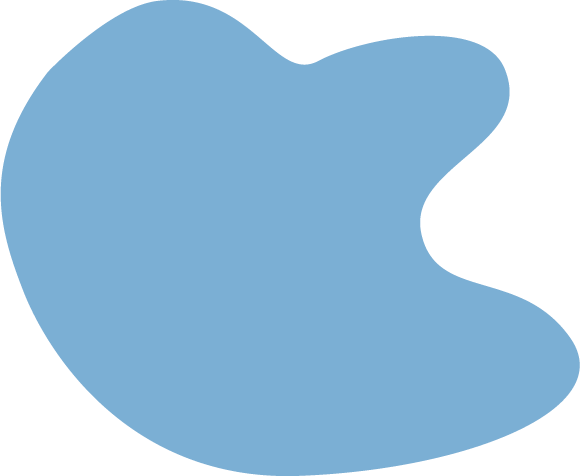
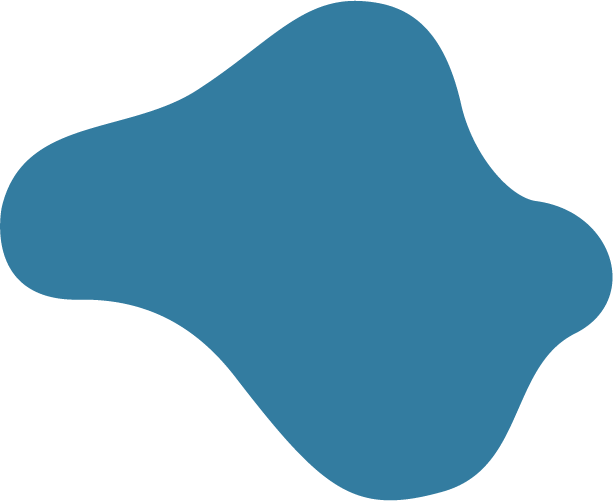
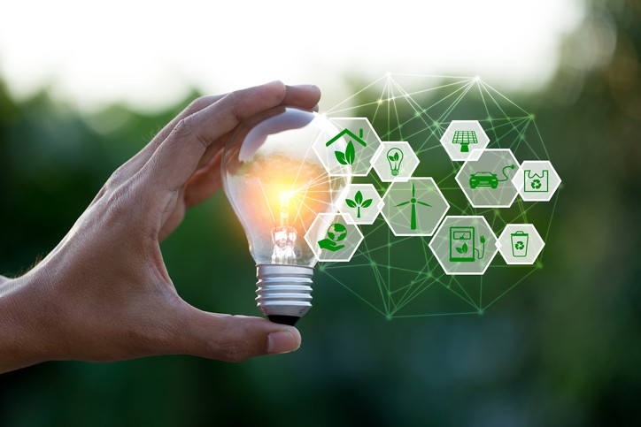
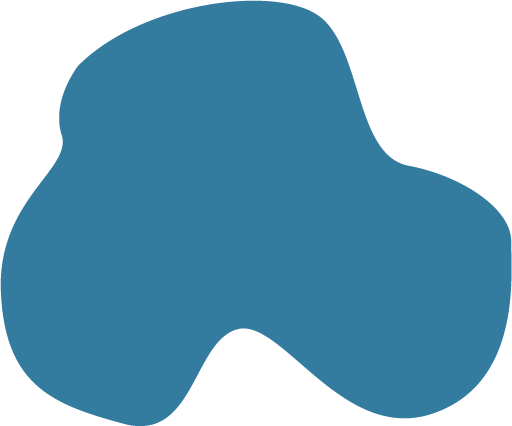
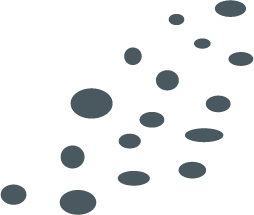
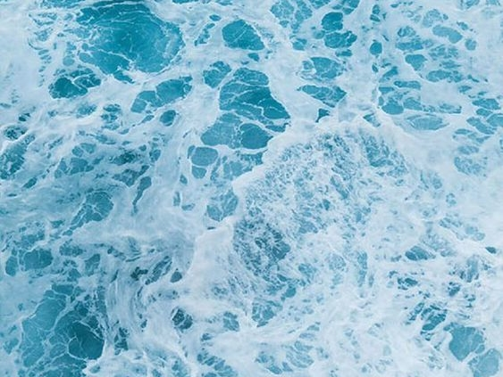
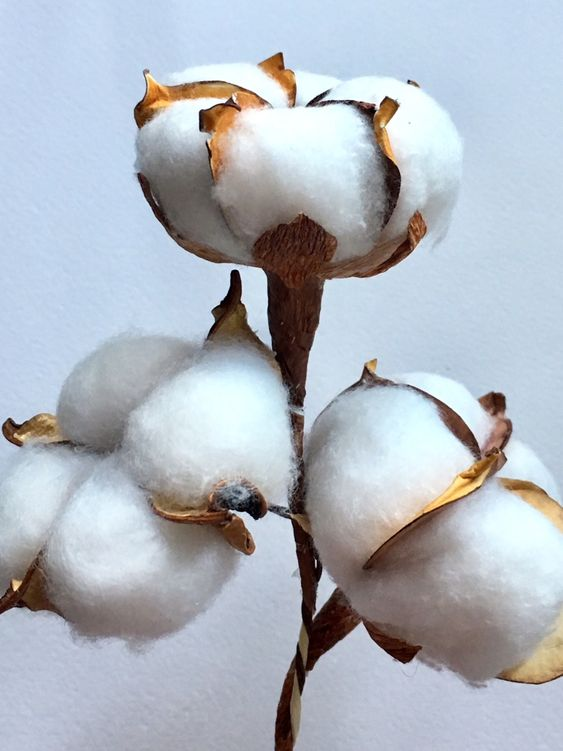

SUSTAINABILITY
Sustainability is a fuzzy word. At SILFEN it means putting action behind the words, considering all stakeholders and always aiming a little bit higher when creating another collection. As a young, global fashion brand, it is our duty to take care of the planet, not only for own sake, but for all future generations to come. Since day one, we have launched various initiatives to keep our carbon footprint to an absolute minimum as well as making conscious decisions concerning the social impact on the communities in the countries, in which we operate. As of 2020 we presented the brand under a new name,” SILFEN”.
  We believe that this small change further represents a new and greener future for SILFEN. We always strive to deliver high quality products in better materials. Within the next couple of collections, we will start implementing more conscious initiatives within the company, and we hope that this inspire you – our customers and consumers, as we are all in this together! As a company with great manufacturing activities, we know that we have a responsibility. Our focus is to make as green a production as possible, and we will continue to launch new initiatives to lower our carbon footprint even further. Read our principles below.
 WATER
The fashion industry is one of the most polluting industries worldwide, and one of the biggest issues is the use and contamination of drinking water. We try to minimize the water consumption in our production in an effort to decrease its negative impact on the environment and to ensure local access to clean water. All cotton used for production of SILFEN bags is either made from eco-friendly or organic cotton. This means that there is much less consumption of water throughout production and treatment of our cotton, than conventional cotton products. In 2020 we will introduce a new collection of bags made from a new material; rPET or Recycled Polyethylene Terephthalate. This recycled material is primarily made from plastic waste collected from the oceans, or from recycled plastic bottles gathered from all over the world.
WORKING CONDITIONS
At Team Silfen, we believe that we have many, wide-spanning obligations. It is not only the environment, we must care for, but also the people who build our products from scratch. We believe that it is our job to amplify a healthy and socially responsible conduct within our organization, including all our suppliers. We ensure the ethical development of future generations by guaranteeing that our suppliers do not support or make use of child labor. We encourage our factories to ensure that all families have the possibility to put their children in school. Team Silfen provides insurance to all our hard-working employees as well as their family. Our factories also grant pensions to all employees, providing them with financial stability after retirement. We support the different religions of employees and protect their right to engage with rituals, prayers etc. at any time. We condemn discrimination, and make sure that the employees are protected from prejudice and injustice at the workplace. We visit our manufacturers regularly to ensure that they follow the issued principles regarding working conditions, quality, pollution etc. This allows us to promise our customers that a SILFEN bag is always crafted in a responsible manner. All our manufacturers are SA8000 certified

MATERIALS
Some of the SILFEN bags is made from Cotton – a fabric commonly known as polluting. At SILFEN, our cotton is either made from eco-friendly or organic cotton. Both materials require far less water consumption than conventional cotton products. Every nylon product is made from eco-friendly material, meaning that the journey from raw material to SILFEN bag impacts the environment as little as possible. All leather goods are made from sustainable high-quality calf leather and is a bi product of the food industry, meaning that every part of the animal is utilized in various industries. We love colors and new trends, but we incorporate consciousness and quality in our design processes to retain timelessness in all products. All our components, zippers, thread, reinforcement, glue etc., are made from high-quality raw materials. We encourage our customers to take good care of their bag, prolonging the life of the product. By caring for your bag, you will be able to create more experiences with it – an important factor in creating a more sustainable, mindful business.
In 2019, we presented our first vegan option in a collection, and we have continued to this since then. We make sure that all non-leather material – e.g. our nylon, lacquer – are all 100% vegan, promising that these products do not contain any parts from animals. In 2020 we are expecting to launch a new collection manufactured in rPET, recycled polyethylene terephthalate. The material is well known as it is made from water bottles across the world – bottles that often end up discarded in oceans or nature. This recycled material is primarily made from plastic waste collected from the oceans, or from recycled plastic bottles gathered from all over the world.
With this new collection, we aim to emphasize the impact of pollution irresponsible wasting. We wish to pass this awareness to our customers, and to encourage them to help clean our oceans! We are aware of the major impact that the shipping industry have on our planet. Because of this, we strive to choose environmental-friendly shipping options when applicable. We are in close contact with other brands in our aim to minimize shipping as much as possible – by joining forces. We strive to ship as much as possible in bulk – mostly by sea or train. These are the most environmentally friendly modes of shipping, reducing polluting emissions